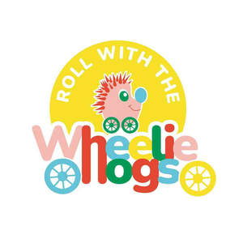

Trade Mark Journal No.2025/011 14 March 2025
UK00004155288 3 February 2025 (9,16,24,25,28,35,41,42)

- Class 9
- Animation software; Animated cartoons; Cartoons (Animated -); Animated cartoons in the form of cinematographic films; Animated films; Downloadable animated cartoons; Video graphics accelerator; Video tapes with recorded animated cartoons; Video films; Video graphics controller; Motion picture films; Interactive entertainment computer software for video games; Integrated circuits for enhanced graphics and video rendering; Interactive video software; Prerecorded motion picture videos; Video editing software; Computer video game software; Audio books; Talking books; Downloadable series of children’s books; Downloadable electronic books; Podcasts; Downloadable podcasts; Videocasts; Downloadable videocasts; Audio tapes featuring music; Downloadable video recordings featuring music.
- Class 16
- Animation cels; Graphic drawings; Cartoon prints; Books; Non-fiction books; Fiction books; Comic books; Writing books; Books for children; Cookery books; Ledgers [books]; Copy books; Printed books; Covers for books; Music books; Series of fiction books; Coloring books; Educational books; Fantasy books; Story books; Colouring books; Painting books; Baby books [storybooks]; Picture books; Gift books; Cook books; Poster books; Guide books.
- Class 24
- Textile goods for use as bedding.
- Class 25
- Jerseys [clothing]; T-shirts.
- Class 28
- Toys simulating objects used by adults in day to day activity.
- Class 35
- Advertising for motion picture films; Cinematographic film advertising; Production of visual advertising matter; Online retail store services relating to clothing; Retail services connected with the sale of clothing and clothing accessories; Mail order retail services for clothing accessories; Promoting the sale of fashion goods through promotional articles in magazines; Retail of third-party pre-paid cards for the purchase of clothing; Promoting the sale of goods and services of others through the distribution of printed material and promotional contests; Online retail store services in relation to clothing; Subscriptions (arranging of) to books, reviews, newspapers or comic books.
- Class 41
- Production of animation; Production of animated cartoons; Animation production services; Special effects animation services for film and video; Production of animated motion pictures; Creating animated cartoons; Services in the production of animated motion picture entertainment; Services in the production of animated motion pictures and television features; Production of animated cine-film clips; Production of animated and live action programmes; Production of motion picture films; Motion picture film production; Production of video films; Animated musical entertainment services; Video film production; Production of a continuous series of animated adventure shows; Production of pre-recorded video films; Post-production editing services in the field of music, videos and film; Rental of cinematographic and motion picture films; Audio, video and multimedia production, and photography; Showing of cinematographic and motion picture films; Production of animated programmes for use on television and cable; Motion picture studios; Rental of motion picture films; Exhibition of video film sound tracks; Video and DVD film production; Audio and video production, and photography; Motion picture song production; Publishing of interactive computer and video game software; Motion picture production; Publishing of books; Publishing of books, magazines; Publication of books; Books (Publication of -); Publishing of books and reviews.
- Class 42
- Animation and special-effects design for others; Animation design for others; Programming of computer animations; Computer-aided design of video graphics; Computer graphic design for video projection mapping; Design of post card cartoon characters; Video game software design; Design and development of video game software; Development of video and computer games; Programming of video game software; Graphic art design; Video game software development; Graphic arts design; Design (Graphic arts -); Computer programming of video games; Graphic illustration design.
Joanna Hutt